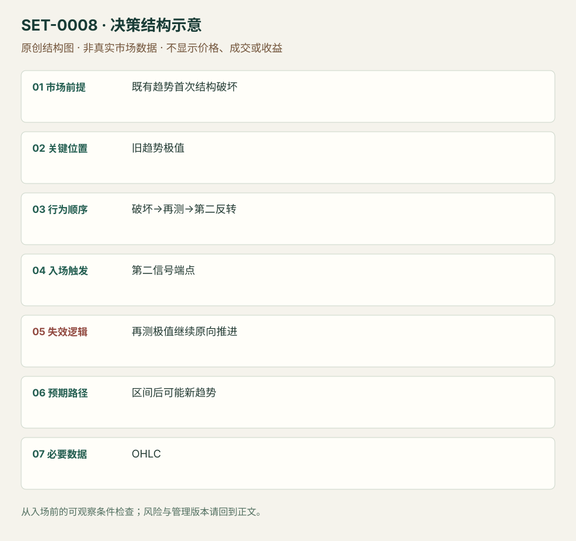

旧趋势破坏后再测极值的主要反转
Major Trend Reversal · SET-0008 · reviewed · v1.0.0
盈利证据：not_established。审查范围与来源版本见第13节；未知字段保留缺失原因。
1. 名称与快速概览
旧趋势第一次被反向推进打断后，不立刻宣布反转；等待再次试探旧极值及第二次反向信号。再测区域不能继续承受原方向推进是关键。
记录口径：PA core；必要数据 OHLC、trend_structure。名称性质：编辑性描述名，英文保留来源术语以便检索。reviewed 只表示本条规则与证据记录审查通过，盈利状态为 not_established。
2. 本质与行为假说
可见事实是旧通道破坏、回测和第二信号。新趋势形成属于待确认结果；“旧参与者被迫退出”只是解释。
3. 适用市场与环境
先有可识别趋势及通道；第一反向波具有足以打断原推进的实体与距离。密集重叠、没有旧趋势的区间不属于本条。
来源实用市场：ES期货图例。
Session：美股/ES现金参考段 09:30–16:00 America/New_York；收盘前平仓。期货夜盘单独建背景，不将其并入开盘区间。
跨市场：本版不主张已经验证的跨市场迁移；更换市场必须重定数据来源、流动性与session。
4. 出现前的观察清单
必要：旧趋势及极值提前标记，第一破坏已经发生，再测仍可观察。增强：回测弱于首次冲击。否决：凭一根逆色柱或事后重画通道。
5. 形成过程与状态转换
趋势→反向冲击越通道→旧方向再测→不能持续扩大旧极值→第二反向信号→管理。回测若恢复连续原向趋势柱，取消。
6. Entry trigger 与执行方式
Brooks版本以第二反向信号柱端点触发；旧极值可以是更低低点、更高低点或双底镜像。只在通道破坏即入是另一时机，不能在复盘中归入本条。
7. Invalidation 与止损逻辑
假说失效于再测区域继续形成原向推进；保护再测摆动极值。紧信号柱止损与宽结构止损分开评估，不能亏损后向外挪。
8. Exit、target 与 trade management
先以旧区间中部及对侧已知摆动管理，再根据新推进决定留仓。出现反向重叠时按区间退出；完整反转趋势不能作为保证目标。日内剩余时间不足时结束。
9. 常见 variations
LL、HL、HH、LH MTR是同一观察顺序；扩张三角中的MTR仍只计一次。无需机械规定极值完全相等。
10. 失败方式与不交易条件
正常亏损：再测信号后再创新极值。未成立：旧通道未破或把小回调当冲击。偏离：第一次抄底却用第二次名称；图上最后大反转不能倒推初次有效。
11. 与相近 setups 的区别
12. 图表与案例解读
已查看Brooks LL-MTR图：左段为紧空头通道，红线标第一次向上破坏，随后再创低点，绿色标第二次反向信号。入场前可知破坏和再测，右侧上涨当时未知。图未标日期、周期和品种，不能据此做收益统计。
- [VIS-000008] Tight bear channel - Minor reversal leading to Major Reversal；定位：Major trend reversals / LL-MTR。紧空头通道破坏后再测低点，第二次反向信号。 验证：chart_viewed。

本地原创示意（VIS-000065，非真实市场数据）：

小屏阅读可打开原尺寸示意图并缩放。

此图用于对照识别顺序与风险定义；不计入真实案例覆盖率。
视觉材料元数据与查看范围
- VIS-000008 · real_source_chart / structure_and_trigger / chart_viewed
品种：未知/不适用；日期：未知/不适用；周期：未知/不适用；时区：未知/不适用
品种未在图中核对；日期未在图中核对；周期未在图中核对；时区未在图中核对；来源图表不是成交审计 - VIS-000065 · synthetic_structure_diagram / illustration_only / generated_not_market_evidence
品种：未知/不适用；日期：未知/不适用；周期：未知/不适用；时区：未知/不适用
无真实品种、日期或价格：这是结构示意
13. 证据、分歧与未知项
两份Brooks材料属于同族，独立佐证有限。图例支持过程识别，不提供完整订单或成本记录。管理是研究模块，来源百分比经验不作为概率。
- [EVD-000012] Al Brooks，《10 best price action trading patterns》，SRC-0016；定位：Major trend reversals。支持：旧趋势先被破坏，再测趋势极值，出现第二次反转机会
- [EVD-000013] Al Brooks，《Patterns on the Open》，SRC-0001；定位：PDF页24–26。支持：强趋势反转需要多步过程，第一次通常先转为区间
审查边界：来源份数与独立核心核验分开；当前类别为 limited_single_family。正文中的概念、官方事实、衍生解说或同族资料只按其支持范围使用。
14. 可用于复盘的检查表
- ☐ 下单前的前提可核对：既有趋势首次结构破坏
- ☐ 事前标记位置：旧趋势极值
- ☐ 行为按顺序出现：破坏→再测→第二反转
- ☐ 实际触发符合选定版本：第二信号端点
- ☐ 事先写明本次否定条件：再测极值继续原向推进
- ☐ 目标/路径只用当时已知信息：区间后可能新趋势
- ☐ 数据满足 OHLC；记录时间、点差、滑点、队列和未成交
- ☐ 记录截止平仓及规则偏离；正常亏损不事后改成“未成立”
15. 后续验证问题
固定通道和回测定义，保留未转趋势的区间结果；比较第一次反转与第二次反转的机会、风险和成本。
双向相关导航
- SET-0007 三推高潮后的反转 MTR必须先破旧趋势结构再重测；本条可以在第一轮高潮末端触发。
- SET-0014 趋势第一次反向冲击后的首回撤 Anti在第一冲击后首回撤即可考虑；本条要求旧极值再次接受检验。
- SET-0011 趋势末端最后旗形突破失败 MTR必先破旧通道再测极值；本条必先出现晚段横旗及其延续失败。